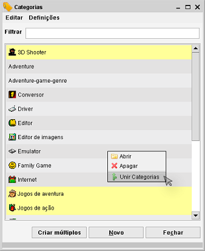
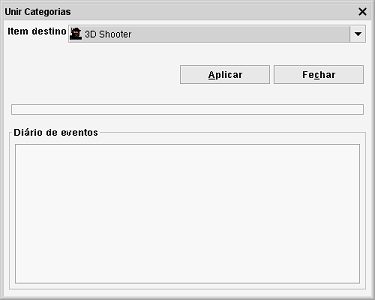

Unir itens de propriedade
Caminho de menu > Gestão > Manter <nome>> Editar > Unir itens
No menu Gestão pode unir propriedades. Se tiver, por exemplo, múltiplas categorias em
uso (atribuídas a itens), mas têm efetivamente o mesmo significado, pode optar por as unir numa única propriedade. Todas
as referências a esta propriedade serão atualizadas e as propriedades antigas (as que foram unidas) serão removidas.
Abra o menu Gestão e selecione a opção Manter apropriada. Selecione os itens que quer unir com outra propriedade
(Ctrl + clique para selecionar múltiplos itens):

Escolha Editar e selecione a funcionalidade Unir (ou clique com o botão direito na janela e selecione a opção
Unir categorias). Agora, abre um diálogo muito simples. Só precisa de escolher a propriedade destino. Esta é a propriedade
onde todas as outras ficarão unidas.

Clique em Aplicar e o processo inicia-se. Pode seguir as ações na janela de diário na parte inferior da janela.